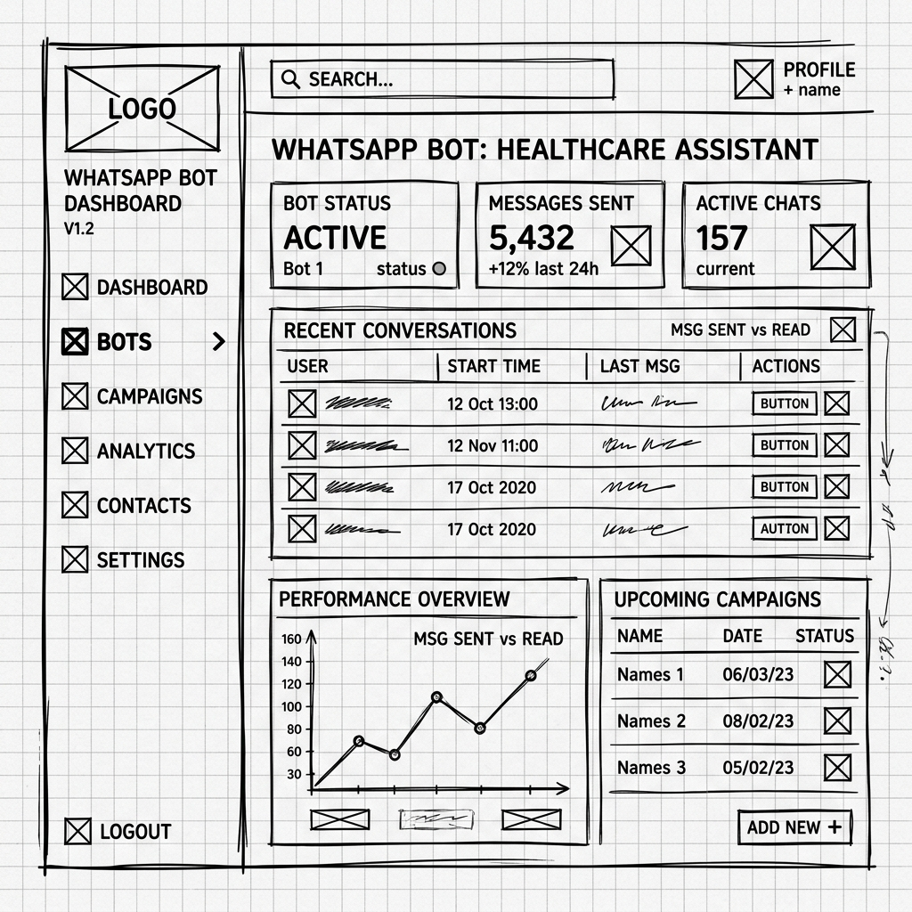
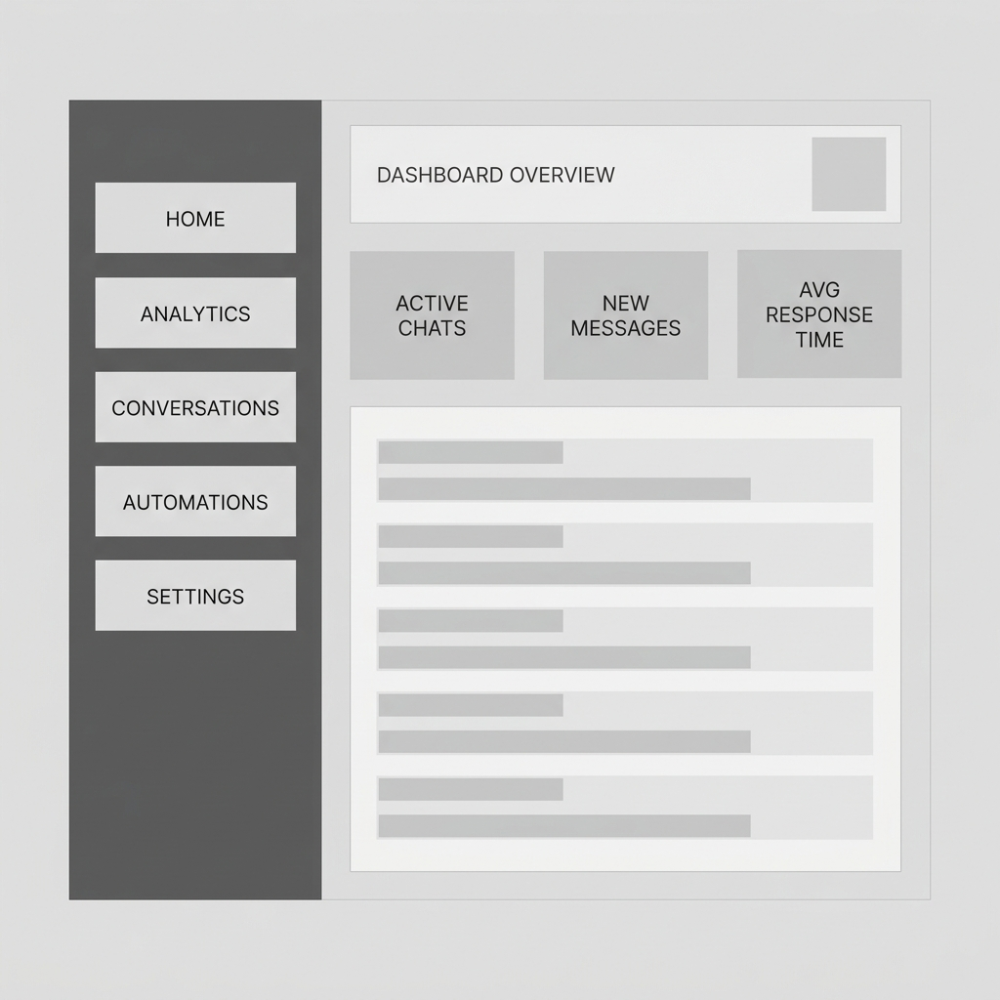
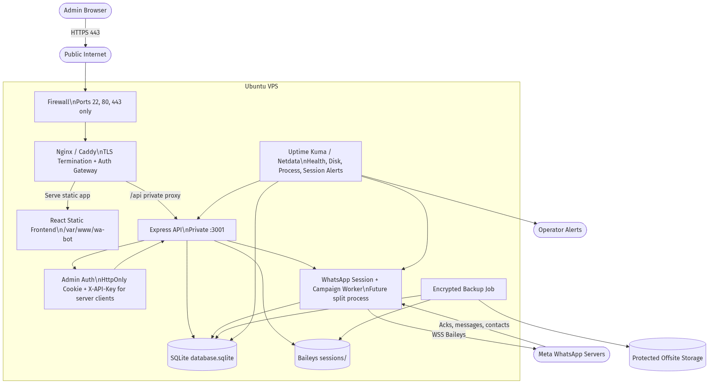

4.1 Evolusi Visual Antarmuka (UI/UX) #
Perjalanan desain antarmuka WA-Bot Pro dikembangkan dengan pendekatan iteratif, bertransisi secara konsisten dari struktur wireframe mentah hingga visualisasi premium bertema gelap glassmorphism.




5.1 Strategi Cabang Repositori (Git Flow) #
Pengelolaan kode menggunakan model Git Flow terstandar untuk menjamin isolasi pengembangan fitur baru dari cabang utama produksi yang stabil.
5.2 Standarisasi Penulisan Kode (Coding Guidelines) #
Panduan gaya penulisan kode proyek untuk menjamin tingkat keterbacaan yang tinggi serta skalabilitas pengembangan tim.
| Kategori Standardisasi | Kebijakan Proyek | Tujuan Teknis & Contoh Konkret |
|---|---|---|
| Linter & Formatter | ESLint + Prettier |
Menyamakan format spasi, semicolons, single-quotes, dan mendeteksi variabel mati (unused variables) otomatis. |
| Naming Convention | camelCase (JavaScript), snake_case (Database SQL) |
JS variable: campaignStatus. DB column: target_number di tabel delivery_logs. |
| Penanganan Kesalahan | Try-Catch + Express Middleware Error |
Menjamin seluruh error socket WhatsApp (Baileys) tertangkap bersih, sehingga mencegah server backend PM2 crash berulang. |
| Operasi Asinkron | Async / Await murni (no promise nesting) |
Menjaga keterbacaan alur asinkronous (ex: call REST API) agar terhindar dari jebakan callback hell. |
5.3 Skrip Peluncur Operasional Server #
Skrip peluncur terintegrasi memicu startup otomatis untuk runtime backend Node.js dan dev-server React Vite secara simultan dalam satu perintah eksekusi. Pada Windows, backend dijalankan lewat wrapper PowerShell agar credential admin bisa diisi saat startup lokal tanpa menyimpan password di frontend.
Windows Shell Launcher:
Linux / Mac OS / WSL Launcher:
7.1 Spesifikasi Kebutuhan Infrastruktur & Prasyarat #
Persyaratan dasar perangkat keras dan runtime minimal untuk menjamin kelancaran penanganan concurrent connections WebSocket Baileys tanpa mengalami crash out-of-memory.
Prasyarat Runtime Minimal:
| Runtime / Software | Versi Minimal | Versi Rekomendasi |
|---|---|---|
| Node.js Engine | v18.16.0 LTS | v20.12.0 LTS (atau lebih baru) |
| npm Package Manager | v9.x | v10.x (atau lebih baru) |
| SQLite3 CLI | v3.39.x | v3.42.0 |
Spesifikasi Perangkat Keras Host Server:
7.1.2 Backend Runtime Roles #
Backend mendukung pemisahan proses berbasis runtime role. Mode npm start tetap menjadi monolith untuk lokal, sedangkan deployment dapat menjalankan API dan worker sebagai proses PM2/systemd terpisah. API-only juga dapat mendelegasikan operasi session inti ke session manager internal memakai WA_BOT_SESSION_MANAGER_URL dan WA_BOT_INTERNAL_TOKEN.
| Role | Command | Tanggung Jawab |
|---|---|---|
| Monolith lokal | npm start | Menjalankan API, restore sesi, campaign worker, dan warmer worker dalam satu proses. |
| API only | npm run start:api | Menjalankan Express API tanpa worker inline. |
| Session manager | npm run start:sessions | Memulihkan sesi Baileys tanpa membuka HTTP API. |
| Campaign worker | npm run start:campaign-worker | Polling SQLite untuk kampanye PENDING dan mengirim bulk message. |
| Warmer worker | npm run start:warmer-worker | Polling SQLite untuk kampanye warmer RUNNING. |
| Combined worker | npm run start:worker | Menjalankan session restore, campaign worker, dan warmer worker tanpa HTTP API. |
7.2 Topologi Deployment Sistem #
Menggambarkan topologi infrastruktur fisik dari WA-Bot Pro saat dideploy ke server VPS Linux. Reverse proxy Nginx/Caddy menjadi gerbang TLS, menyajikan frontend statis, memforward request /api ke backend private, menjaga admin auth tetap server-side, serta menghubungkan worker, SQLite, sesi Baileys, backup, dan monitoring VPS.

7.3 VPS Deployment Readiness Plan #
Deployment publik hanya boleh dilakukan setelah item P0 pada roadmap SDLC selesai. Baseline admin auth cookie sudah tersedia, tetapi backend tetap tidak boleh dipublikasikan langsung di port 3001; reverse proxy harus menjadi gerbang TLS, static frontend, dan autentikasi.
| Layer | Keputusan Target |
|---|---|
| Reverse proxy | Nginx atau Caddy sebagai TLS termination, static frontend server, dan gateway menuju backend private. |
| Backend exposure | Express tetap di port private/local; jangan buka 3001 langsung ke internet. |
| Process manager | systemd atau PM2 dengan restart policy, log rotation, environment variable non-repo, dan service user non-root. |
| Backend runtime roles | Gunakan npm run start:api untuk API-only dan npm run start:worker atau worker granular untuk proses background. Gunakan WA_BOT_SESSION_MANAGER_URL untuk delegasi session manager. |
| Firewall | Buka hanya 22, 80, dan 443; batasi SSH dengan key dan fail2ban bila tersedia. |
| Runtime data | backend/database.sqlite dan backend/sessions/ berada di storage terlindungi, bukan di webroot. |
| Backup | Backup terenkripsi terjadwal aktif secara lokal; offsite copy ke storage luar VPS ditunda sampai tujuan storage tersedia. |
| Monitoring | Uptime Kuma untuk endpoint HTTP, Netdata/Prometheus/Grafana untuk resource, dan alert untuk disk, process, session, dan campaign. |
wa-bot-api, systemd wa-bot-worker, secure cookie/CORS, API readiness status=ready, worker readiness status=ready, UFW aktif hanya untuk 22/80/443, systemd backup/restore timers, local healthcheck timer, logrotate, dan HTTP/HTTPS smoke. Status ini belum production-ready sampai provider firewall review, external alert monitoring, manual smoke evidence HTTPS, dan offsite backup saat storage tersedia selesai.8.1 Rencana Pemeliharaan Sistem Berkelanjutan #
Struktur rencana pemeliharaan sistem dibagi menjadi tiga jenis penanganan utama untuk menjaga kestabilan jangka panjang sistem WhatsApp integration.
delivery_logs yang usianya melebihi 30 hari untuk mencegah pembengkakan database SQLite (Database Vacuuming). Melakukan audit berkala file kredensial untuk membuang sesi mati yang tidak digunakan.@whiskeysockets/baileys mengikuti pembaruan protokol API internal Meta. Memecahkan masalah (hotfix) apabila terjadi kegagalan sinkronisasi autologin sesi yang terputus.